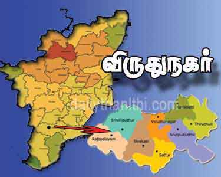

LOCAL CITY USER'S INFORMATION
|
THE FUTURE IS IN OUR HANDS...

<
>
GOALS OF CITY USER INFORMATION
1).This movement act as an initiative to make a city as smart in the society.
2).It helps to guide the new user .
3).It helps the user to travel alone no need o any guide.
LOCAL CITY USER INFORMATION
Local city user information is a system which helps to guide the user who is new to the city and helps them to suggest which is best for them to travel ,food and restarutent.
ABOUT THE SYSTEM
-
In these system we are designed mainly to reduce the new user conflicts to the city
-
such that there may occur any problem then the new user get conflicts and can't able to know where to go
- And there may occur some problem to find which place is suitable according to there point of view
- In these we mention review about the customer hence it help's for them to choose the best one among all
- If the user sign up and get login id then they are consider to special hence if there any events in their native place it will be informed to them.